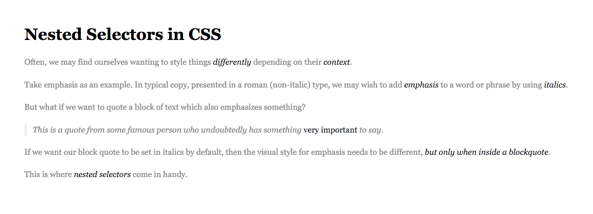
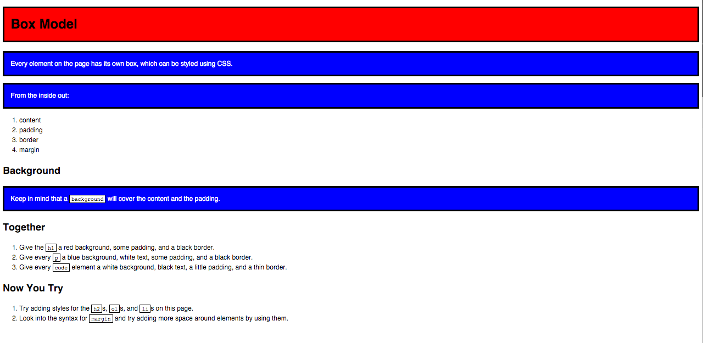
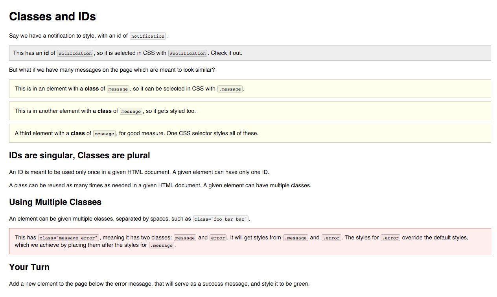
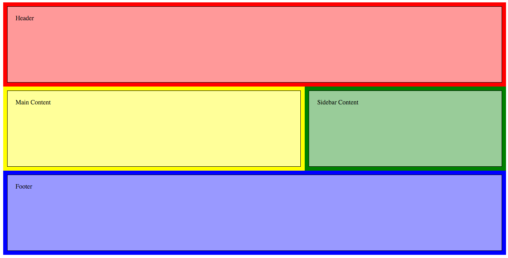

LESSON 4
CSS Box Model
Agenda
- Github sync
- Turn in HW with pull request
- Exit Ticket Review
- See Mike. See Mike code. See Mike code HW.
- CSS box model
- Floats & clears
- In class exercises (4 total)
What is this box model you speak of?
The CSS box model is essentially a box that wraps around HTML elements, and it consists of: margins, borders, padding, and the actual content.
Let's look at an example...
Box Model

Let's break down each part of the box model
- Content
- Padding
- Border
- Margin
CONTENT
The content of the box, where text and images appear
PADDING
Clears an area around the content. The padding is transparent
Padding
Space between the border and the content
Adds to the total width of the box.

Padding
Four values
padding: top right bottom left;
Two values
padding: top/bottom right/left;
One value
padding: all;
Padding
15 pixels on all sides
padding: 15px;
padding-top: 10px;
padding: 10px 5px 3px 5px;
Padding
padding: 10px 20px 30px 40px;

BORDER
A border that goes around the padding and content
Border
The edge around the box, specified as "thickness, style, color."

Border
A solid red border
border: 1px solid #ff0000;
A thick dotted black top border
border-top: 4px dotted #000000;
Two different border styles
border-top: 1px solid #ff0000;
border-bottom: 4px dotted #000000;
Border - Other Properties
border-width: 10px;
border-style: dashed;
border-color: #666666;
You can specify each property separately, or all three together.
MARGIN
A border that goes around the padding and content
Margin
The transparent area around the box that separates it from other elements.

Margin
15 pixels on all sides
margin: 15px;
10 on top, 5 on right, 3 on bottom, 5 on left
margin: 10px 5px 3px 5px;
10 pixels on top
margin-top: 10px;
Auto Margin
If a margin is set to auto on a box that has width, it will take up as much space as possible.
CENTERED
margin: auto;
width: 300px;
FLUSH-RIGHT
margin-left: auto;
margin-right: 5px;
width: 300px;
Let's Practice
Together let's create a div that does the following:
- Has a 1px dashed boarder
- Has a 20px space on all sides between the content and the border
- Has 10px of space on the top and bottom of the box
- Has a 25px space on the left and right of the box
Float
- "Floating" an element takes it in the normal flow, as far to the left or right of it's containing element as possible.
- Any other elements, such as paragraphs or lists, will wrap around the floated element.
- Always specify a width when floating an element, otherwise the element is likely to take up the whole page and not appear floated.
- You can specify a) whether an element is floated or not, and b) which side it floats on.
Float: Example
Below a <blockquote> is floated to the left, allowing text to wrap around it on the right

Float
.float{
float:left;
width:200px;
background:yellow;
}
I like to hang out on the left side.
Using floats to place elements side by side
If you want two block level elements to be side by side, you need to float both elements. One left, and one right.

Clear
- Clearing tells the element on which side (right, left, both) other elements cannot appear.
- If you had an image floated left, and you did not want the paragraph to appear next to it, you would add clear: left; to the paragraph.
- Clearing both sides makes sure floats don’t flow past the clear element.
clear: right;
clear: left;
clear: both;
Clear
.float{
float:left;
width:50px;
background:yellow;
}
.clear-left{
clear:left
}
hi
hi
Let's Practice
Together let's build a page that has two divs side by side, with one div underneath.
In Class Labs
Please complete these by the end of the night:
Nested Selectors
Tags and Boxes
Error Message
Floating Sections
